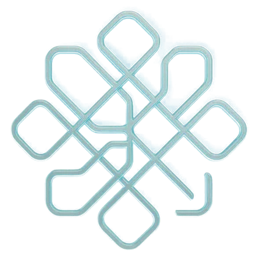

HTTP 404 // ROUTE DISCONNECTED
Looks like you've taken a wrong turn.
The route you requested could not be located in our production cluster. It may have been updated, relocated, or does not exist. Our core engineering infrastructure and client services remain fully operational.
/
Core Engineering Services
AI & Machine Learning, Web & Mobile Development, Cloud & DevOps, and SAP Enterprise Integration.
Explore Services →Enterprise Solutions
Production systems including NeuroSyn-SAP forensic audits, Dev self-healing code, and Aero diagnostics.
View Solutions →Selected Case Studies
Validated outcomes for AAKS Financial Operations, Polarions Cloud Infrastructure, and IJAIKE Research.
Read Case Studies →Executive Consultation
Schedule a technical discussion directly with our founder or submit your project scope for an estimate.
Contact NeuroSyn →